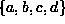
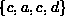
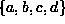
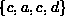

Data Structures and Algorithms
with Object-Oriented Design Patterns in Java
Data Structures and Algorithms
with Object-Oriented Design Patterns in Java
Consider the path
in a directed graph  .
.
Referring again to graph  in Figure
in Figure  we find that the path
 is a simple path of length three.
Conversely, the path  also has length three
but is not simple because vertex c occurs twice in the sequence
(but not at the ends).
The graph contains the path which is a cycle of length three,
as well as , a cycle of length four.
The former is a simple cycle but the latter is not.
we find that the path
 is a simple path of length three.
Conversely, the path  also has length three
but is not simple because vertex c occurs twice in the sequence
(but not at the ends).
The graph contains the path which is a cycle of length three,
as well as , a cycle of length four.
The former is a simple cycle but the latter is not.
 Copyright © 1998 by Bruno R. Preiss, P.Eng. All rights reserved.
Copyright © 1998 by Bruno R. Preiss, P.Eng. All rights reserved.